{'method': 'a', 'tau': 0.1, 'A_max': None, 'prefilter_novel_lt': None}；种子 20261024。 绿色：第1步最佳候选；橙色：相关最终候选/块；紫色：最终最佳候选；红色：漏检连通域。 成员组内去重后的 r 为完整并集覆盖率，去向继承成员组；不会用合并 r 重新分流。
可选 532，展示 8。
test_103.png：第1步 r=0.418, 精修；第1b步 r=0.418, 精修；冻结方案 r=0.028, 补漏
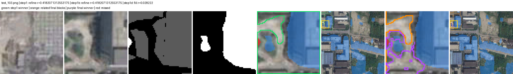
test_1167.png：第1步 r=0.608, 精修；第1b步 r=0.608, 精修；冻结方案 r=0.000, 补漏
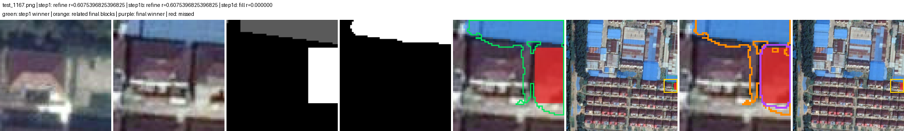
test_1503.png：第1步 r=0.284, 精修；第1b步 r=0.284, 精修；冻结方案 r=0.000, 补漏
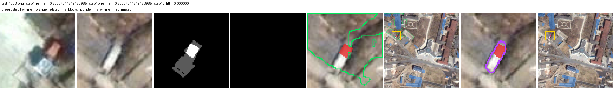
test_1666.png：第1步 r=0.340, 精修；第1b步 r=0.340, 精修；冻结方案 r=0.016, 补漏
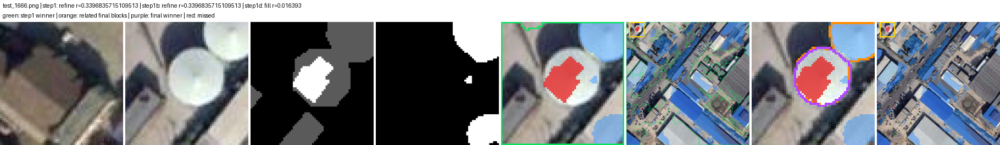
test_191.png：第1步 r=0.661, 精修；第1b步 r=0.661, 精修；冻结方案 r=0.000, 补漏
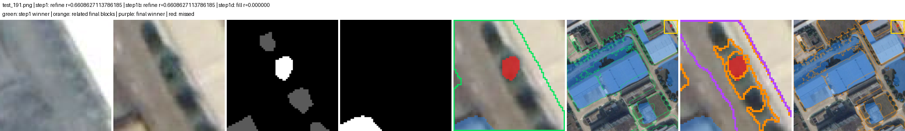
test_448.png：第1步 r=0.399, 精修；第1b步 r=0.399, 精修；冻结方案 r=0.021, 补漏
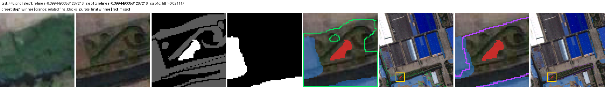
test_604.png：第1步 r=0.699, 精修；第1b步 r=0.699, 精修；冻结方案 r=0.054, 补漏
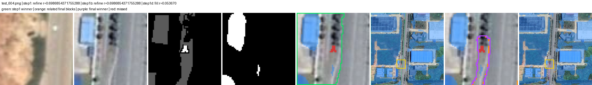
test_65.png：第1步 r=0.143, 精修；第1b步 r=0.143, 精修；冻结方案 r=0.000, 补漏
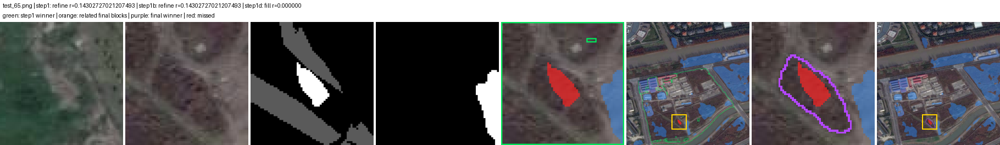
可选 3870，展示 8。
test_1147.png：第1步 r=0.435, 精修；第1b步 r=0.435, 精修；冻结方案 r=0.435, 精修
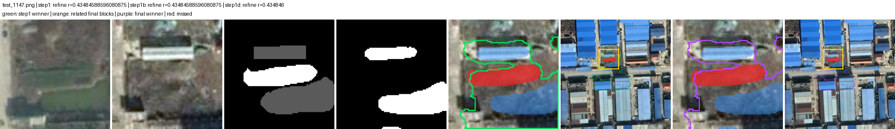
test_1552.png：第1步 r=0.234, 精修；第1b步 r=0.234, 精修；冻结方案 r=0.234, 精修
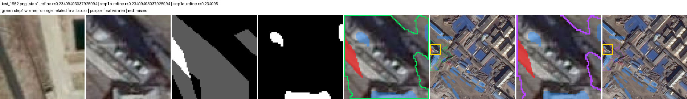
test_1666.png：第1步 r=0.340, 精修；第1b步 r=0.340, 精修；冻结方案 r=0.340, 精修
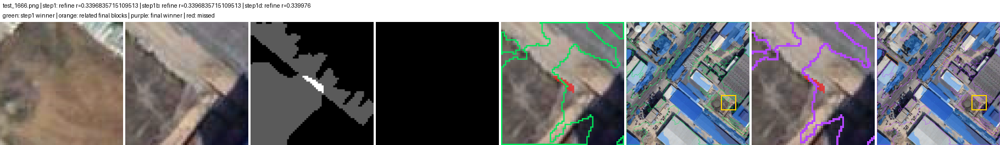
test_273.png：第1步 r=0.625, 精修；第1b步 r=0.625, 精修；冻结方案 r=0.625, 精修
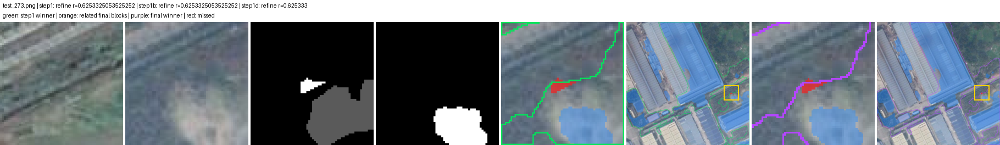
test_608.png：第1步 r=0.412, 精修；第1b步 r=0.412, 精修；冻结方案 r=0.412, 精修
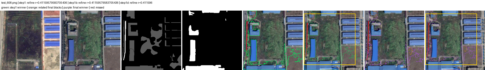
test_791.png：第1步 r=0.557, 精修；第1b步 r=0.557, 精修；冻结方案 r=0.558, 精修
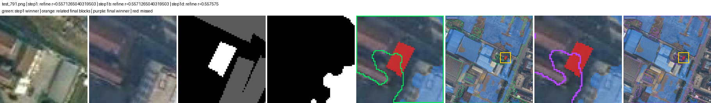
test_791.png：第1步 r=0.557, 精修；第1b步 r=0.557, 精修；冻结方案 r=0.558, 精修
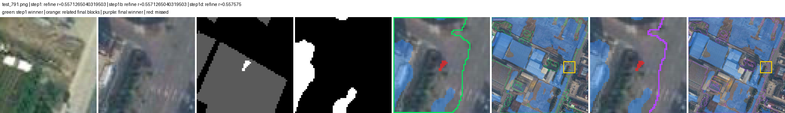
test_978.png：第1步 r=0.608, 精修；第1b步 r=0.608, 精修；冻结方案 r=0.608, 精修
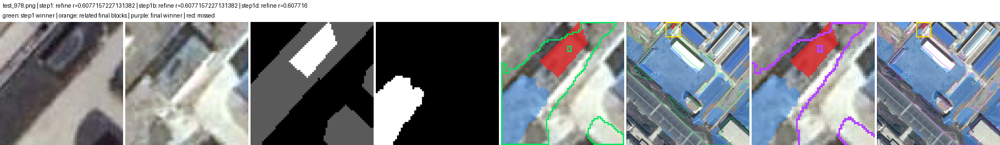